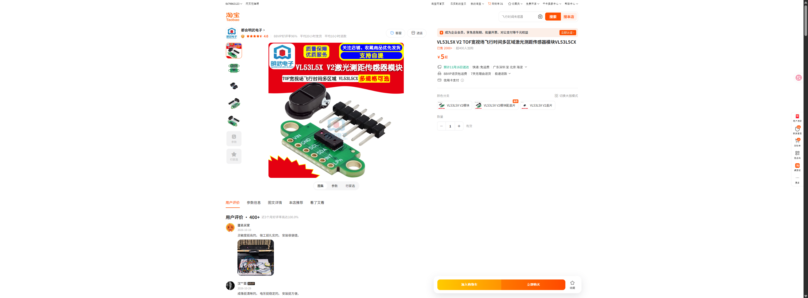

VL53L5X V2 ToF 接线
Microduck · 首走后再安装和验收
实物参考

当前不接：
INT、LPN。先只接 I2C 所需的四根线。接线关系
| ToF 针脚 | 连接 | 说明 |
|---|---|---|
VIN | HAT J5 的 3.3V | 上电前核对 HAT 丝印和模块供电范围 |
GND | HAT J5 的 GND | 必须共地 |
SDA | HAT J5 的 SDA | I2C 数据 |
SCL | HAT J5 的 SCL | I2C 时钟 |
INT / LPN | 暂不接 | 首轮不需要 |
实际操作顺序
- 确认 HAT 已断电，先把
SH1.0端接 HAT J5，杜邦母端按丝印接模块四个针脚。 - 用万用表复核
VIN/GND极性、3.3V 电压和SDA/SCL方向；不要按线色猜。 - ToF 先不装进头壳，通电后在 Studio 的 ToF 页面确认设备和
0x29读数。 - 首走不依赖 ToF；先完成舵机 ID、IMU、站姿和低速行走，再做 ToF 机械固定与服务验收。